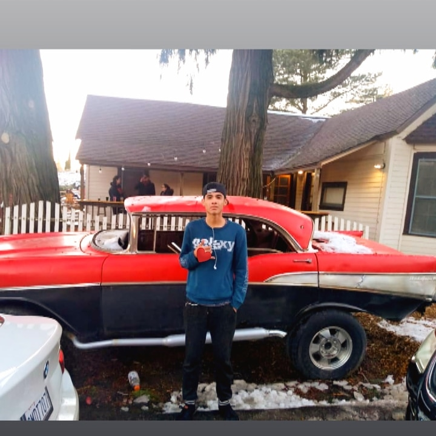

4BPGM MIRAMONTES CONTRERAS MARCO ANGELO
Autobiografia

Hola Mi nombre es angelo tengo 16 años naci el 3 de septiembre de 2003 en San Diego, unos pocos dia de nacido me vine para tijuana tengo una hermana de 23 años de edad tengo 1.75 de estatura y 16 años de edad o eso creo ya que no me eh medido hace mucho lo que eh vivido aqui en tijuana ah estado muy bien ya que eh tenido buenas amistades desde niño ya que jugabamos todos los dias en la calle y pillamadas etc como cualquier otro niño a esa edad
Recuerdo que el primer dia de kinder no llore aunque muchos dicen que eso les paso eso pero ami no no se porque a lo mejor ya estaba mentalizado de eso o para eso convivi con muchos compañeros y grandes amistades en el kinder me lo pase bien ya que eran puras peliculas y leer libros
yo no eh sido o no soy muy social ya que soy un poco timido antes pero ahora no mucho ya que me eh ido acostumbrando a socializar con los demas. en mi secundaria era muy estudioso ya que sacaba buenas notas en todos los bloques